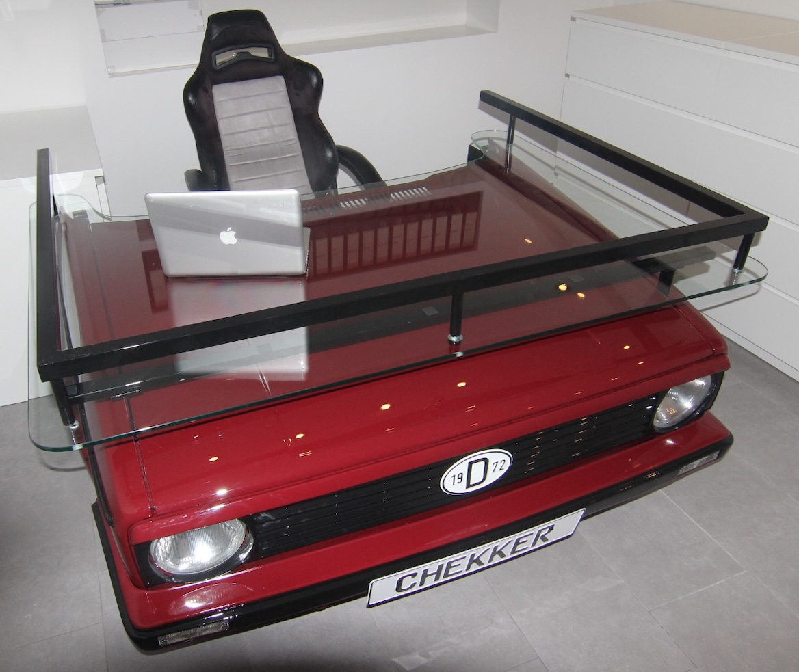
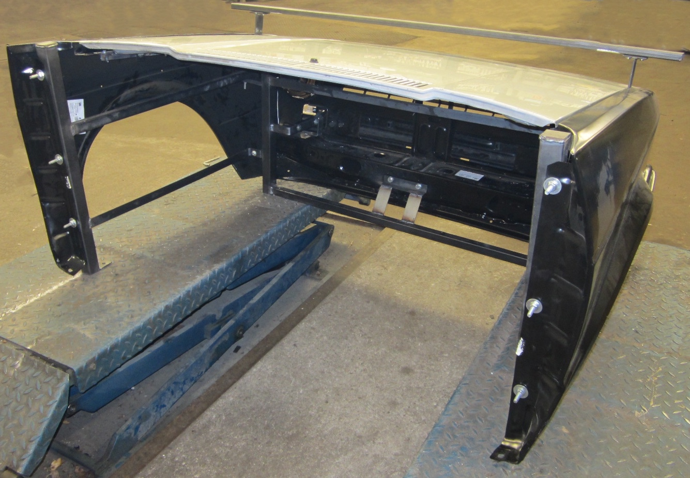
Golf 1 – Schreibtisch
Golf-Front mit Glasplatte und Sportsitz
Aus automobilen Klassikern werden einzigartige Möbelstücke.
Acht individuelle Eigenbauten – von der Karosserie bis zum fertigen Möbelstück.


Golf-Front mit Glasplatte und Sportsitz
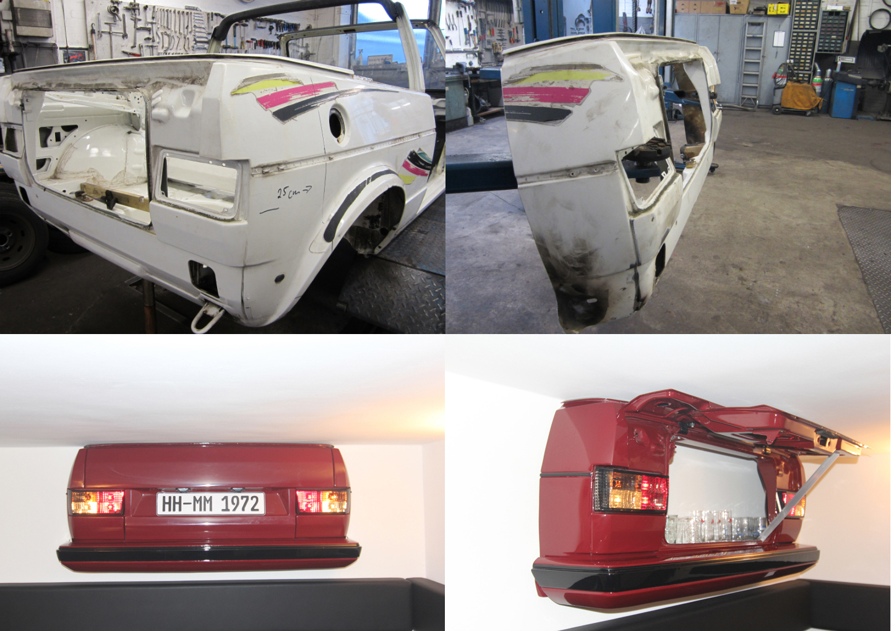

Heckpartie mit aufklappbarer Vitrine
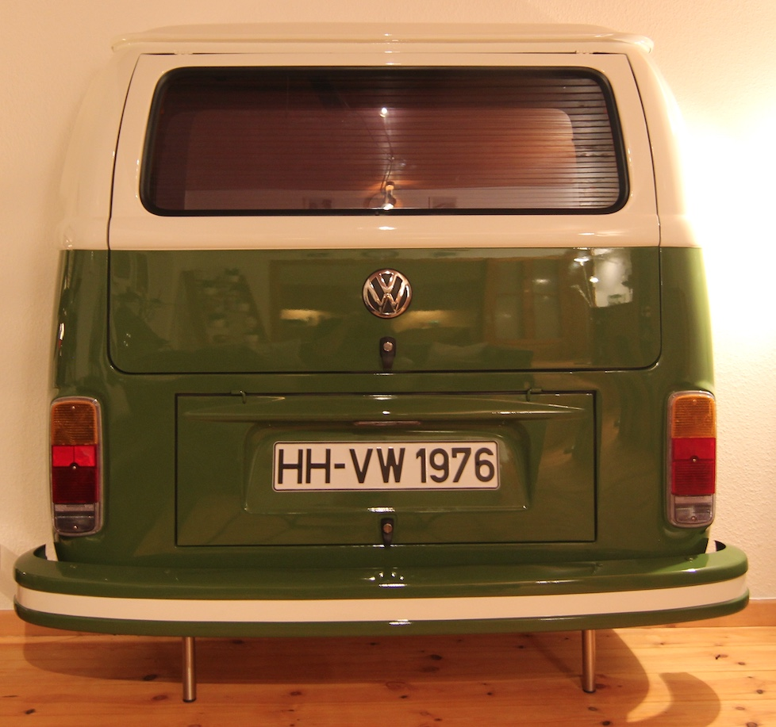
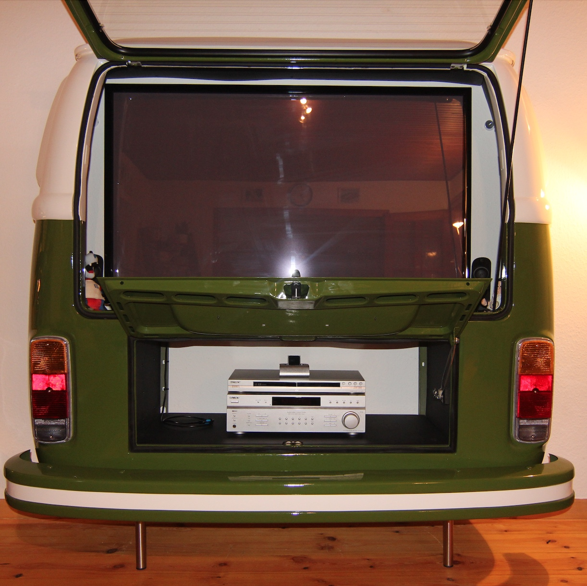
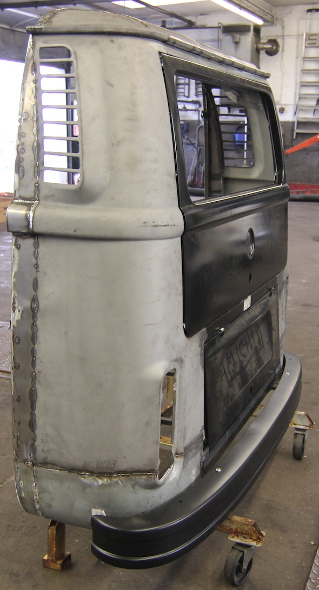
Klassischer Bulli mit TV und Hi-Fi-Fach
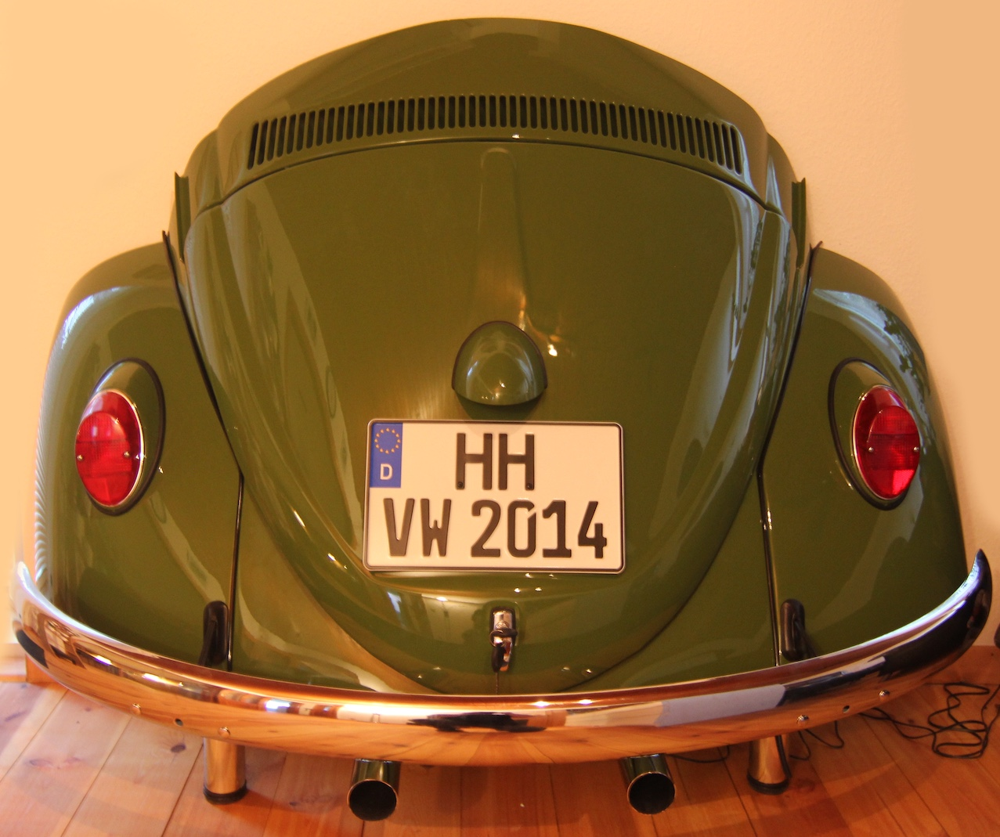
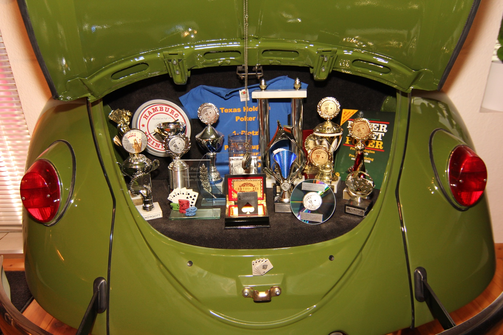
Käferheck mit Platz für Sammlerstücke
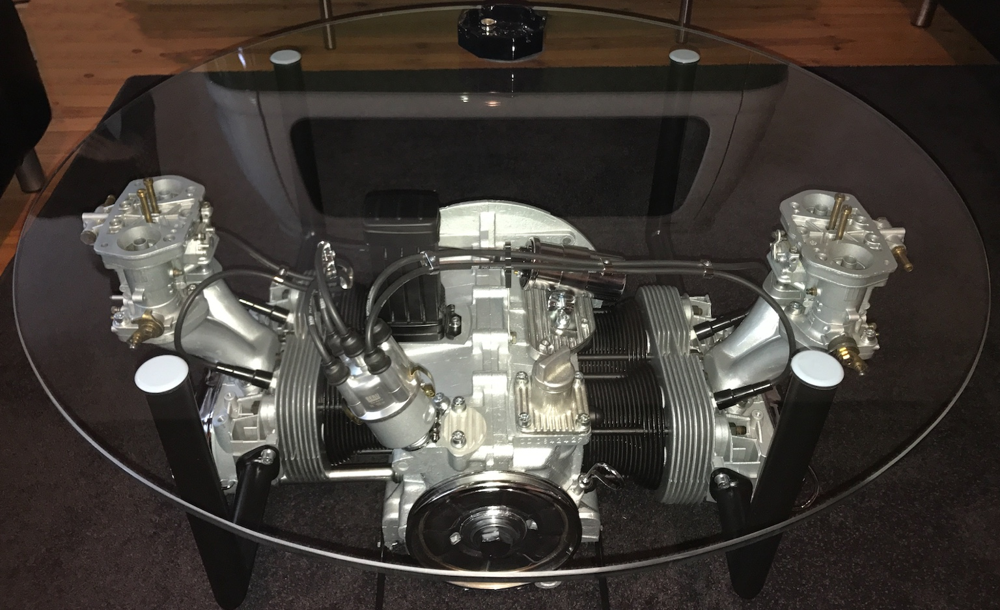
Boxermotor unter einer Glasplatte
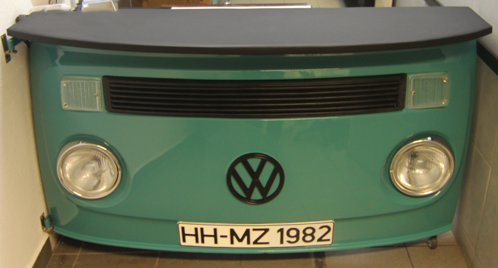
Bulli-Front als außergewöhnliches Möbelstück
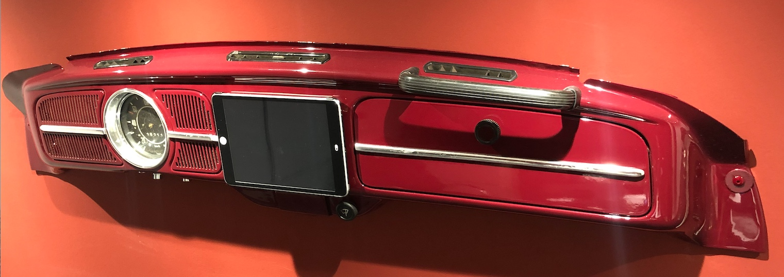
Klassisches Dashboard mit Tablet
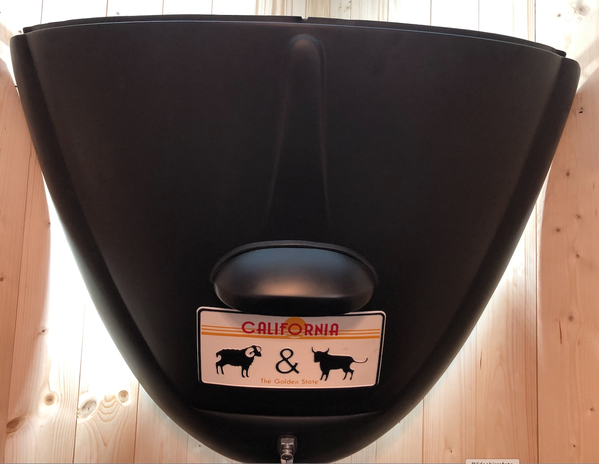
Motorklappe in mattem Schwarz
Bilder anklicken zum Vergrößern · Bei mehreren Bildern innerhalb einer Karte seitlich wischen.